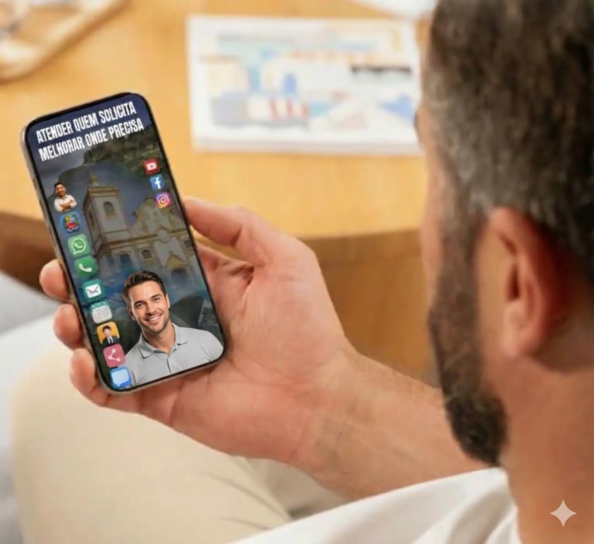

Sua Presença em Destaque

“Em um cenário político cada vez mais digital, estar próximo do eleitor exige presença, organização e clareza. O VOX é sua central de comunicação oficial. Reúna todas as suas redes, propostas, petições, campanhas, doações e canais de contato em um só lugar. Fácil de compartilhar, confiável para o público e totalmente personalizado com sua identidade.”
Com seu rosto, sua personalidade, um espaço que reúne tudo o que você precisa para arrecadar doações, mobilizar voluntários e engajar eleitores.
Uma interface personalizada para:
